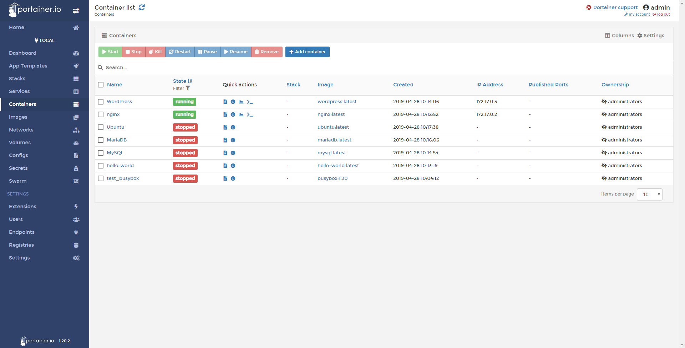

Docker-compose
In diesem Abschitt erfährst du was Docker compose ist, wie du es installierst und wie einen WordPress-Blog mit einer MySQL-Datenbank verknüpfst. Außerdem erfährst du etwas über Volumes.
Einleitung
Sobald das passende Container-Image gefunden ist, kann man diesen mit $ docker run <Name des Images> starten. Wir haben ebenfalls schon gesehen dass der docker run Command allerlei Parameter akzeptiert. Die Parameter ermöglichen es den Container nach Belieben zu personalisieren, man kann ihm einen Namen zuweisen, ein Port auf der Host-Maschine verfügbar machen oder ein Volumen anhängen. Leider ergibt das schon bei einfachen Aufgaben wie ein Webserver, einen langen, unleserlichen Befehl. Genauso unpraktisch wird es, wenn der Container Abhängigkeiten aufweist und mit anderen Containern zusammenarbeitet.
Mit Docker-Compose wird der auszuführende Container in einer YAML-Datei definiert. Name, Volumen, Ports und Abhängigkeiten werden hier definiert. Anschließend kann die Komposition mit docker-composer up ausgeführt werden.
Docker-Compose installieren
Bevor es losgehen kann, benötigst du das Programm Docker-Compose. Windows- und macOS-Nutzer müssen nur Docker für ihr Betriebssystem installieren und bekommen Docker-Compose direkt mitgeliefert. Unter Linux musst du es eigens installieren – und die Paketquellen sind nicht immer eine geeignete Anlaufstelle. So bietet Debian im Februar 2019 noch Docker-Compose 1.8.0 aus dem Sommer 2016 an, obwohl Version 1.23.2 aktuell ist. Weil sich in der Docker-Welt in zwei Jahren viel verändert hat, lohnt die Installation der neuen Version. Du solltest daher auf den Installationsweg setzen, den Docker vorschlägt. Folgender Befehl lädt automatisch die richtige Version für Ihr Betriebssystem herunter:
sudo curl -L "https://github.com/docker/compose/releases/download/1.24.0/docker-compose-$(uname -s)-$(uname -m)" -o /usr/local/bin/docker-composeJetzt muss das Programm ausführbar gemacht werden:
sudo chmod +x /usr/local/bin/docker-composeText-Editor für YAML einrichten
Bevor es weiter mit Docker-Compose geht, sollten wir uns die docker-compose.yml Datei näher anschauen. YAML ist ein rekursives Akronym das für “YAML Ain’t Markup Language” steht. Dieses Dateiformat wird von vielen Applikationen verwendet, sowohl für die Konfiguration als auch für das Strukturieren von Daten.
Die Docker-Compose-Datei wird im YAML-Format verfasst, das jeder Texteditor erzeugen kann – mit einer IDE kannst Du dir das Leben aber deutlich erleichtern.
In YAML wird die Struktur der Daten über Einrückungen festgelegt, eine Unterebene wird durch zwei Leerzeichen am Zeilenanfang eingeleitet. Hat Ihr bevorzugter Editor eine Möglichkeit, Leerzeichen sichtbar zu machen, solltest du diese Funktion nutzen. Empfehlenswert ist die Open-Source-IDE Visual Studio Code. Mit Strg+Umschalt+P öffnest du die Befehlseingabe. Dort tippe den Begriff „Rendern“ ein und wähle „Ansicht: Rendern von Leerzeichen umschalten“. Leerzeichen sind jetzt nicht mehr unsichtbar. Wer viel mit Docker-Compose und Visual Studio Code arbeitet, kann sich zusätzlich die Erweiterung „Docker Compose“ installieren. Sie fügt eine kleine GUI für Docker-Compose in der Oberfläche der IDE hinzu, über die man einzelne Container inspizieren und verwalten kann.
Erstes Projekt
Für das erste Projekt legen wir einen Ordner an. Der Ordnername bestimmt nachher den Namen des Containers, deswegen sollte dieser aus praktischen Gründen nicht zu lang sein. Erstelle hier die Datei docker-compose.yml.
Eine Compose-Datei beginnt immer mit der Angabe der version:, die die Version der Compose-Version angibt. Welche Version du nutzen kannst, hängt von deiner Docker-Version ab. Zum Zeitpunkt des Schreibens ist Docker-Version 18.09 die aktuellste. Falls du gerade einsteigst, dann hast du sehr wahrscheinlich diese Version installiert und kannst in der YAML-Datei version 3.7 fordern. Um sicher zu gehen, kannst du mit docker -v deine Docker-Version herausfinden.
Im nächsten Abschnitt werden unsere Container definiert. Dieser Abschnitt nennt sich services Es nimmt folgendes Format an:
services:
--> Containername:
-----> Container-Optionen
--> Containername:
-----> Container-OptionenDas erste Projekt soll ein WordPress-Blog sein. Damit wir diesen erfolgreich starten können brauchen wir zwei Services: Wordpress und ein Webserver. Um herauszufinden wie der Name des benötigten Images heißt, empfiehlt es sich unter hub.docker.com danach zu suchen. Wie wir unserer Service nennen ist dem uns überlassen. Der erste Service bekommt den Namen wordpress und das Image wordpress:latest. Der Tag :latest gibt an, dass die aktuellste Version des Images verwendet werden soll. Zum Ablegen der Daten braucht WordPress eine MySQL- oder MariaDB-Datenbank. Sie bekommt den Namen db und soll aus dem Image mysql:5.7 entstehen. Die Compose-Datei beginnt mit folgenden Zeilen:
version: '3.3'
services:
db:
image: mysql:5.7
wordpress:
image: wordpress:latestYAML-Neulinge müssen sich neben der Einrückung daran gewöhnen, nach dem Doppelpunkt hinter dem Namen eines Attributs ein Leerzeichen zu setzen. Schreibst du statt mysql: 5.7 nur mysql:5.7 wird Docker-Compose mit einer Fehlermeldung abbrechen.
Dieses Grundgerüst für das WordPress-Setup wird jetzt Stück für Stück ausgebaut – die vollständige Variante findest du weiter unten.
Ports und Netzwerke
Netzwerken ist unter Docker-Containern aus der gleichen Docker-Compose-Datei sehr einfach. Wenn du keine weiteren Angaben machst, richtet Docker-Compose ein Netzwerk für alle Container einer Compose-Datei ein. Das Netzwerk heißt dann ordnername_default. In diesem Netzwerk kann jeder Container jeden anderen über den Service-Namen erreichen – Docker stellt einen internen DNS bereit und löst die Hostnamen, im Beispiel wordpress und db, auf.
Mit IP-Adressen musst und solltest du nicht hantieren, sie werden dynamisch zugewiesen.
Das Standard-Netzwerk ist vom Typ „Bridge“. Das bedeutet, dass Docker sich mit NAT-Regeln darum kümmert, dass die Pakete, die an den Netzwerkkarten des unterliegenden Systems ankommen, an Container weitergereicht werden. Der Container wordpress soll auf Port 8000 lauschen und HTTP-Anfragen beantworten. Der Webserver im Container hört auf Port 80 – eine Information, die man in der Dokumentation des Containers oder beim Studium des zugehörigen Dockerfiles findet. Um den Port von außen erreichbar zu machen, wird eine Liste von Zuordnungen in der Liste ports: übergeben.
Mit der Zuweisung 8000:80 reserviert Docker den Port 8000 auf allen Netzwerkkarten des Systems und lauscht darauf.
version: '3.3'
services:
db:
image: mysql:5.7
volumes:
- db_data:/var/lib/mysql
restart: always
environment:
MYSQL_ROOT_PASSWORD: some wordpress
MYSQL_DATABASE: wordpress
MYSQL_USER: wordpress
MYSQL_PASSWORD: wordpress
wordpress:
depends_on:
- db
image: wordpress:latest
ports:
- "8000:80"
restart: always
environment:
WORDPRESS_DB_HOST: db:3306
WORDPRESS_DB_USER: wordpress
WORDPRESS_DB_PASSWORD: wordpress
WORDPRESS_DB_NAME: wordpress
volumes:
db_data: {}Restart: always
Sinnvoll für Container, die ständig laufen sollen – wie eine Datenbank oder ein Webserver – ist die Anweisung: restart: always. Steigt das Programm wegen eines Fehlers aus, fährt Docker-Compose den Container sofort wieder hoch.
Die Anweisung depends_on: teilt Docker-Compose mit, in welcher Reihenfolge die Container gestartet werden sollen. Da das WordPress-Blog ohne Datenbankanbindung Fehlermeldungen auswirft, soll sein Container erst anlaufen, wenn die Datenbank bereit ist. In komplexeren Setups können das auch mehrere Abhängigkeiten pro Container sein, bei Zirkelschlüssen beschwert sich Docker-Compose.
Volumes - Laufwerke anhängen
Wird ein Docker-Container gestoppt, gehen alle gesammelten Daten des Prozesses verloren. Somit werden auch die Daten in unserem Datenbank-Container zurückgesetzt. Dies ist für den WordPress-Blog nicht sinnvoll. Damit die Daten einen Container-Neustart überdauern kann man die Daten auf dem Host mit sogenannten Volumes ablegen. Diese Volumes, auch Laufwerke genannt, sind Verzeichnisse auf dem Host Rechner auf den ein Container zugreifen kann.
Ein benanntes Volume muss im Abschnitt des Containers mit einem Pfad im Container verbunden werden, getrennt mit einem Doppelpunkt. Außerdem muss es im Abschnitt volumes: auf der obersten Ebene angelegt werden. Ein benanntes Volume kann man wie folgt der YAML-Datei hinzufügen:
services:
db:
image: mysql:5.7
volumes:
- db_data:/var/lib/mysqlSetzt du ein solches benanntes Volume ein, kümmert sich Docker darum, die Daten auf der Festplatte zu speichern. Dazu legt Docker in seinem Datenverzeichnis Ordner mit kryptischen Namen an. In diese Ordner solltest du nie per Hand eingreifen, das Verfahren ist also nur praktikabel, wenn du die Daten nicht über das Dateisystem des Hosts bearbeiten möchtest.
Alternativ verwendest du, eine Pfadangabe auf dem Host-Dateisystem. Entweder absolut (beginnend mit „/“) oder relativ, ausgehend vom Compose-File. Auch einzelne Dateien können als „Volume“ übergeben werden. Das ist zum Beispiel für Konfigurationsdateien sinnvoll. Mit :ro am Ende markierst du das Volume als read-only, der Container kann es also nicht verändern.
Soll ein Container auf ein Hardwaregerät des Hosts zugreifen, zum Beispiel ein USB-Gerät, übergibst du das nach der gleichen Syntax wie ein Volume, allerdings im Abschnitt devices.
Container starten und stoppen
Ist die Container-Zusammenstellung fertig, musst du sie nur noch starten. Navigiere auf der Kommandozeile in das Verzeichnis mit dem Compose-File und führe fogenden Befehl aus.
$ docker-compose upAuf der Kommandozeile kannst du beobachten, wie die beiden Container hochfahren und ihre Einrichtungsprozeduren durchlaufen. Die Datenbank bemerkt, dass das Datenverzeichnis noch leer ist und legt eine Datenbank anhand der Umgebungsvariablen an. Rufst du http://localhost:8000 im Browser auf, begrüßt dich der Einrichtungsassistent von WordPress und möchte mit Ihnen den Blog einrichten.
Für Entwicklungsarbeit ist ein einfaches up sehr nützlich, da du jede Aktivität in den Containern live verfolgen kannst (jeder HTTP-Aufruf erzeugt zum Beispiel eine Zeile). Allerdings ist die Kommandozeile jetzt belegt und die Container leben nur, bis du Docker-Compose mit Strg+C beendest. Sinnvoller ist es, den Parameter -d (für „detached“) anzuhängen. Dann landen die Ausgaben nicht mehr auf der Kommandozeile. Mit docker-compose logs kann man dann nach Bedarf anzeigen, was in den Containern vor sich gegangen ist. Haben die Container die Anweisung restart: always bekommen, kannst du den Server jetzt auch neu starten. Docker-Compose kümmert sich nach dem Boot darum, dass sie wieder starten. Erst der folgende Befehl, ausgeführt im Ordner mit der Compose-Datei, schaltet die Container aus.
$ docker-compose down Manchmal ist es sinnvoll, nicht alle Container hochzufahren, die in der Compose-Datei definiert sind. Um nur ausgewählte Container zu starten, übergibt man deren Namen (wie unter services angegeben) als Paramter: $ docker-compose up wordpress db. In diesem Beispiel würde wordpress ausreichen, da Docker-Compose die Abhängigkeiten automatisch berücksichtigt.
Mit der Angabe dieser kurzen Namen kann man auch andere Docker-Compose-Befehle auf einzelne Container zuschneiden. So führt $ docker-compose restart wordpress einen Neustart aus. Diese kurzen Namen existieren aber nur in der Welt von Docker-Compose. Mit $ docker ps erfährst du, welchen Namen der Container vom Docker-Daemon bekommen hat. Das Namensschema ist immer gleich: der Name des Ordners, in dem die Compose-Datei liegt, der Name des Services, eine Ziffer, beginnend bei 1, jeweils durch einen Unterstrich getrennt.
Wenn du mit Docker-Compose experimentierst und die Volumes änderst, musst du die Container herunterfahren und Docker überzeugen, die neuen Volumes zu nutzen. Dazu hängst du den Parameter --force-recreate an $ docker-compose up an.
Manchmal ist es sinnvoll, Container aus anderen Compose-Projekten verfügbar zu machen. Betreibt man zum Beispiel mehrere Webseiten auf einem Server, kann jede Seite ein eigenes Compose-Projekt bekommen. In einer eigenen Compose-Datei wird ein Webproxy angelegt, die alle eingehenden Anfragen verteilt und sich um die Beschaffung von Zertifikaten beschäftigt.
Du kannst den von Docker-Compose generierten Container-Namen leicht verwenden, um Container aus anderen Compose-Projekten erreichbar zu machen. Dazu reicht die Angabe von external_links: mit einer Liste der anzubindenden Container.
docker-compose.yml benennen
Die Compose-Datei muss nicht docker-compose.yml heißen. Nach einer Datei mit diesem Namen sucht Docker-Compose aber, wenn du ihm keinen anderen Dateinamen übergibst. Dafür dient der Parameter -f, dem du hintereinander einen oder mehrere Dateinamen übergeben darfst. Gibst du mehrere Dateien an, kombiniert Docker-Compose ihre Inhalte. Das kann man ausnutzen, um zum Beispiel eine alternative Entwickler-Umgebung einzurichten. Zusätzlich zur docker-compose.yml lege eine docker-compose.dev.yml an:
wordpress:
image: wordpress:4-php7.2-apacheMit docker-compose -f docker-compose.yml docker-compose.dev.yml up fahren die beiden Container fast genauso wie zuvor hoch – geändert wurde nur das Image des WordPress-Containers. Die Angaben der letztgenannten Datei ersetzen immer die zuvor gesetzten Werte, zusätzliche Attribute werden hinzugefügt.
Im Swarm
Docker-Compose ist nicht nur ein nützliches Werkzeug für Docker-Anwender, es ist auch die Voraussetzung, um mehrere Docker-Hosts im Swarm Mode zu betreiben. Damit ist es möglich, mehrere Instanzen eines Containers zu starten und die Last zu verteilen.
Die Docker-Dokumentation liefert unter „Swarm Mode“ einen Einstieg in das Thema. Wie ein Docker-Schwarm in der Praxis aussieht und welche Besonderheiten in dieser Betriebsart zu berücksichtigen sind, zeigen wir Ihnen im nächsten Abschnitt.
Container verteilen mit Docker Swarm
In diesem Abschnitt erfährst du mehr über die Möglichkeit mit Docker über mehrere Systeme zu arbeiten.
Einleitung
Docker kann mit Hilfe von “Docker Swarm” über mehrere Systeme arbeiten. Der Vorteil ist, dass Kapazitäten effizient genutzt werden und Ausfälle vermieden. Der Docker Daemon koordiniert hierbei nicht nur das eigene System sondern kümmert sich um einen Schwarm an Systemen, auf denen Docker läuft.
Bestandteile und Funktionsweise
Ein Schwarm besteht aus zwei unterschiedlichen Komponenten: mindestens einem Manager und nach Belieben unterschiedliche viele Arbeiterknoten. Der Manager hat als zentrale Einheit die Aufgabe, den Schwarm zu koordinieren. So werden von ihm bestimmte Aufgaben verteilt. Der Arbeiterknoten bekommt seine Aufgaben vom Manager zugeteilt und führt dann die ihm genannten Docker Container aus. Es kann mehr als einen Manager geben, dies ist empfehlenswert, wenn man bei einem Ausfall eines Managers einen anderen als Backup haben möchte.
Docker Swarm baut auf dem Modell von Docker Compose auf. Laufende Container heißen in diesem Zusammenhang jedoch Tasks. Eine Beschreibung gibt an, wie häufig diese Tasks ausgeführt werden sollen. Die Tasks zusammen mit der Beschreibung werden „Service“ genannt. Eine Möglichkeit ist, dass jeder Knoten einen Task ausführt. Die andere Möglichkeit ist, dass eine genau definierte Anzahl von Knoten dies tut. Beispielsweise kann der Nutzer bei einem Manager fünf Nginx Server angefordern. Der Manager startet darauf auf fünf freien Knoten diese dann jeweils als Task. Als „Stack“ oder Anwendung bezeichnet man eine Vielzahl von Services.
Eine Stärke von Docker Swarm ist, dass virtuelle Netzwerke zum Organisieren der Zusammenarbeit automatisch aufgebaut werden. So können beispielsweise die anderen Knoten auf Ports, die von einem Service genutzt werden, zugreifen. Sobald der Schwarm erst einmal eingerichtet ist, muss man sich um nichts weiter kümmern. Eine Anwendungen kann über mehrere Knoten ausgeführt werden und wenn man beispielsweise Knoten wegnimmt, werden die Aufgaben auf die verbleibenden Arbeiterknoten automatisch verteilt. Leider hat Docker Swarm keinen gemeinsamen Datenspeicher, was bedeutet, dass sich nicht alle Container für den Schwarm direkt eignen wie z.B. ein MySQL-Image. Den Speicher kann man über Umwege jedoch selber erstellen. Verschiedene Ansätze (die hier nicht weiter erläutert werden) sind Rex-Ray, GlusterFs oder Portworx. Alternativ kann man die Container, die Zustandsdaten haben auf dem Manager behalten. Die Container, die ohne diese klarkommen, kann man dem Schwarm übergeben.
Einen Swarm erstellen
Mit folgendem Befehl wird der Computer als Manager eingerichtet und Docker Swarm in Betrieb genommen:
$ docker swarm init --advertise-addr xxx.xx.x.xxMit docker swarm init initialisiert Docker einen neuen Schwarm und macht das System zum ersten Manager. Der Befehl --advertise-addr ist die IP Adresse und der Port, den andere Knoten nutzen sollen um sich mit dem Manager zu verbinden. Docker gibt nach Eingabe des Befehls eine Antwort zurück, die dieser ähnelt:
$ docker swarm init --advertise-addr 172.18.0.51
Swarm initialized: current node (sol4lngdnaidtywpo0boipmqp) isnow a manager.
To add a worker to this swarm, run the following command:
docker swarm join --token SWMTKN-1-1fuq7n6tnvltfq4xcn5sp3aak1zeflmmmim1w3stgyrlkxt89z-6c2l1zfkqz3xm43tv7gl9axlg 172.18.0.51:2377
To add a manager to this swarm, run 'docker swarm join-token manager' and follow the instructions.Einem Schwarm beitreten
Mit dem folgenden Befehl tritt ein System unserem erstellen Swarm bei und wird zum Arbeiterknoten:
$ docker swarm join --token <hier der Token> xxx.xx.xxx.x:xxxxDocker gibt daraufhin folgende Antwort zurück, falls die Eingabe erfolgreich war:
This node joined a swarm as a worker.Den Schwarm nutzen
Mit dem folgenden Befehl kann man auf dem System des Managers überprüfen welche Knoten Teil des Schwarm sind und welche Rollen sie erfüllen:
$ docker node lsEine Rückgabe könnte folgendermaßen aussehen:
ID HOSTNAME STATUS AVAILABILITY MANAGER STATUS ENGINE VERSION
r3761tjtwpv81kbltx7tib9a4 * node1 Ready Active Leader 18.09.4
r1i697r13mva25675tksrvakn node2 Ready Active 18.09.4
ki37sv9l6u2yurex7yjsrwksa node3 Ready Active 18.09.4Ist dies der Fall und die hinzugefügten Knoten werden aufgelistet, dann kann der Schwarm genutzt werden.
In folgendem Beispiel starten wir drei Tasks eines kleinen Webservers.
$ docker service create --detach=false --name www --replicas 3 --constraint node.role==worker --publish 80:80 containous/whoami
rcx8etkzkk03wb4gu2aoh27tf
overall progress: 3 out of 3 tasks
1/3: running
2/3: running
3/3: running
verify: Service converged
Mit folgendem Befehl kann überprüft werden welcher Knoten unseren Service ausführt:
$ docker service ps www
ID NAME IMAGE NODE DESIRED STATE CURRENT STATE ERROR PORTS
wfb9pbqu23l1 www.1 containous/whoami:latest node2 Running Running 6 minutes ago
pdfe8yrrwy0w www.2 containous/whoami:latest node3 Running Running 6 minutes ago
xs8c7w6s5nr3 www.3 containous/whoami:latest node3 Running Running 6 minutes agoDer folgende Befehl ändert die Anzahl der Tasks auf eins:
$ docker service scale www=1Ein bestimmter Knoten kann von seinen Aufgaben erlöst werden mit folgendem Befehl:
$ docker node update--availability drain swarm2Die Nutzung vereinfachen
Mithilfe von YAML Dateien kann die Verwendung von Docker Swarm vereinfacht werden. So kann man alle Services einer Anwendung zu einem Stack zusammenführen.
Für unser Beispiel von oben sähe das dann so aus:
version: "3.3"
services:
whoami:
image: containous/whoami
deploy:
replicas: 3
restart_policy:
condition: on-failure
ports:
80:80Gestartet wird die Datei mit folgendem Befehl:
$ docker-stack deploy -c ./datei.yml testnameEs besteht die Möglichkeit Umgebungsvariablen in eine .env Datei auszulagern, was üblich ist, wenn man mehrere Container mit Docker Compose auf einmal starten möchte. Mit folgendem Befehl können diese verwertet werden:
$ docker-compose upDer Befehl docker create stack ignoriert die .env Dateien und liest nur die YAML Datei ein.
Container in einem Schwarm können bestimmte Dateien einbinden. Es gibt die Möglichkeiten diese Dateien als “Docker Secrets” oder als “Docker Configs” anzulegen, je nachdem wie gesichert es passieren soll. Bei “Docker Secrets” werden die Dateien verschlüsselt abgespeichert. Verwaltet und verwendet werden diese mit den uns bereits bekannten Befehlen. Die Dateien sind für alle Knoten unseres Schwarm abrufbar. Sie können während Container auf sie zugreifen nicht verändert werden. Dieses Problem umgeht man, indem man eine neue Datei anlegt und diese zur Laufzeit hinzugefügt mit service update --secret-add. Es besteht nicht die Möglichkeit, dass Container sie bearbeiten. Sie haben nur die Möglichkeit die Dateien zu lesen.
Grafische Oberflächen - GUI in Docker
In diesem Kapitel lernst du was die Vorteile und Möglichkeiten mit GUIs in Docker sind und wie man so eine Grafische Oberfläche einrichtet.
Einleitung
Die meisten Prozesse von Docker lassen sich über die Kommandozeile verwalten. Dies hat den Vorteil, dass man sehr flexibel, codenah und kompatibel über verschiedene Setups ist. Allerdings verliert man als Laie schnell die Übersicht und braucht sehr lange zum Einarbeiten. Auch wenn beim richtigen Lernen und Arbeiten mit Docker kein Weg an der Kommandozeile vorbeiführt lohnt sich ein Blick auf eine grafische Oberfläche für Container. Gerade zum Behalten der Ordnung über viele Container oder auch wenn es darum geht, sich das Eintippen ellenlanger Befehle zu sparen, ist ein Blick auf solch ein Tool wert.
Portainer
Eine der populärsten GUIs für Docker ist Portainer. Portainer ist ein Open Sourrce Projekt, das wie Docker selbst über eine kostenlose Community und eine kostenpflichtige Enterprise Version verfügt. Die Installation per Docker-Container ist vergleichsweise simpel und der Betrieb ressourcen-sparend. Man erreicht das Grafikinterface per Browser und besonders die gute Usability und Übersicht über alle Container, Images und andere Anwendungen sind hier als Pluspunkt zu erwähnen. Die Installation läuft hier per Docker-Container. Dafür einfach folgenden Befehl eingeben:
$ docker run -d -p 9000:9000 -v /var/run/docker.sock:/var/run/docker.sock portainer/portainerNun wird auf Docker Hub nach der neuesten Version von Portainer geschaut und diese heruntergeladen. Du kannst mit $ docker ps bereits sehen, dass der Container in Betrieb ist. Wie in dem Befehl oben festgelegt ist für die Portainer-Seite der Port 9000 festgesetzt, dies kannst du auch aus dem docker ps auslesen. Dort ist sogar der vollständige Port 0.0.0.0:9000 beschrieben. Wenn du diesen in die URL-Leiste deines Browsers eingibst solltest du zum ersten Mal das Portainer UI erreichen. Hier wird nun ein Benutzername und ein Passwort verlangt. Nach der Registrierung solltest du auf deiner individuellen Portainer.io Seite sein.
Unter Dashboard siehst du eine Übersicht aller Dienste. Eine der nützlichsten Funktionen ist das Verwalten von Containern oder Images. So bekommt man erstmals eine Übersicht der schieren Anzahl totgeglaubter, vergessener zu Testzwecken angelegter Images oder Container.
Kitematic
Eine Alternative, die besonders für die Mac und Windows-User interessant sein könnte ist Kitematic. Dieses wurde vor einiger Zeit von Docker Inc. übernommen und wird somit besonders von der Docker-Desktop-Version aktiv unterstützt. Gehe einfach in der Taskleiste auf den Dockerwal und auf Kitematic. Bei erstmaliger Installation sollte nun eine Meldung mit kurzer Beschreibung und Download-Link auftauchen. Nach der Installation einfach starten und schon hast du eine Übersicht über alle Container. Außerdem hast du direkt Zugriff auf Docker Hub und kannst einfach nach Images suchen, diese installieren und wertvolle Informationen herauslesen.